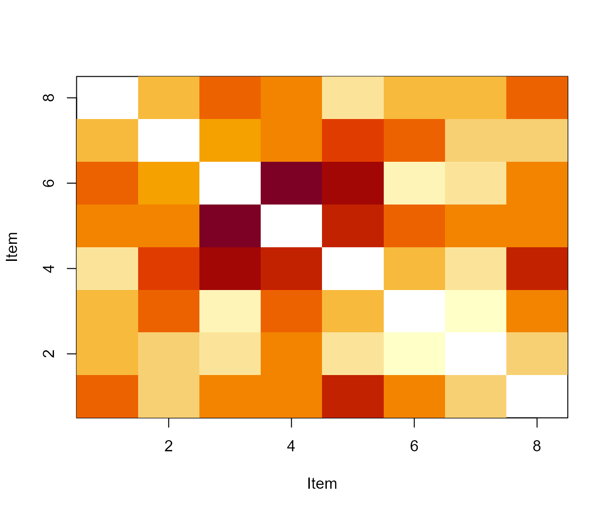

IRT information, scoring, and diagnostics
Source:vignettes/irt-information-scoring-diagnostics.Rmd
irt-information-scoring-diagnostics.RmdThe native IRT layer provides transparent mathematical utilities for common dichotomous and polytomous families. Estimation is not silently approximated when a specialized external engine is required.
items <- data.frame(
item_id = paste0("I", 1:8), a = seq(.8, 1.5, length.out = 8),
b = seq(-1.5, 1.5, length.out = 8), c = 0, d = 1
)
info <- eyeprocess_irt_test_information(seq(-3, 3, by = .25), items)
head(info)
#> theta information conditional_sem
#> 1 -3.00 0.4005250 1.580102
#> 2 -2.75 0.4803804 1.442804
#> 3 -2.50 0.5724035 1.321749
#> 4 -2.25 0.6771612 1.215217
#> 5 -2.00 0.7948356 1.121660
#> 6 -1.75 0.9251109 1.039688
eyeprocess_irt_measurement_precision_profile(info$theta, items)
#> $curve
#> theta information conditional_sem
#> 1 -3.00 0.4005250 1.5801022
#> 2 -2.75 0.4803804 1.4428041
#> 3 -2.50 0.5724035 1.3217486
#> 4 -2.25 0.6771612 1.2152174
#> 5 -2.00 0.7948356 1.1216603
#> 6 -1.75 0.9251109 1.0396882
#> 7 -1.50 1.0670551 0.9680696
#> 8 -1.25 1.2189945 0.9057308
#> 9 -1.00 1.3783701 0.8517597
#> 10 -0.75 1.5415627 0.8054144
#> 11 -0.50 1.7036702 0.7661384
#> 12 -0.25 1.8582366 0.7335834
#> 13 0.00 1.9969649 0.7076439
#> 14 0.25 2.1095336 0.6885045
#> 15 0.50 2.1837780 0.6766993
#> 16 0.75 2.2066812 0.6731784
#> 17 1.00 2.1666781 0.6793644
#> 18 1.25 2.0573861 0.6971755
#> 19 1.50 1.8817331 0.7289890
#> 20 1.75 1.6540561 0.7775438
#> 21 2.00 1.3978026 0.8458183
#> 22 2.25 1.1391150 0.9369496
#> 23 2.50 0.8997522 1.0542377
#> 24 2.75 0.6930181 1.2012342
#> 25 3.00 0.5236718 1.3818802
#>
#> $target
#> [1] -2 2
#>
#> $area
#> [1] 6.761533
#>
#> $min_information
#> [1] 0.7948356
#>
#> $max_sem
#> [1] 1.12166
#>
#> attr(,"class")
#> [1] "eye_irt_precision_profile"The module also supplies EAP/MAP/MLE score utilities, conditional uncertainty, bank targeting, residual fit, Q3/local-dependence summaries, and Infit/Outfit-style diagnostics. Person-fit quantities are model diagnostics; they must not be converted into claims about cheating, disengagement, diagnosis, or mental state.
Stan’s current User Guide emphasizes explicit identification for IRT
models and sparse encodings when response matrices are incomplete. These
principles motivate eyeprocess_irt_identification_audit()
and eyeprocess_irt_sparse_design_audit().
Primary source: https://mc-stan.org/docs/stan-users-guide/item-response-models.html.
Visual diagnostics
The following deterministic example illustrates two native diagnostic views. These figures demonstrate software behaviour for a synthetic item bank; they are not empirical evidence of construct validity.
viz_items <- data.frame(
item_id = paste0('I', 1:8),
a = seq(0.8, 1.5, length.out = 8),
b = seq(-1.5, 1.5, length.out = 8),
c = 0,
d = 1
)
viz_theta <- seq(-3, 3, by = 0.25)
viz_information <- eyeprocess::eyeprocess_irt_test_information(
viz_theta,
viz_items
)
stopifnot(
inherits(viz_information, 'eye_irt_information_profile')
)
plot(viz_information)Test information across the latent-trait continuum for a deterministic illustrative item bank.
viz_sim <- eyeprocess::simulate_eyeprocess_irt_binary(
80L,
viz_items,
missing_rate = 0.10,
seed = 12L
)
viz_q3 <- eyeprocess::eyeprocess_irt_q3(
viz_sim$responses,
viz_sim$probabilities
)
stopifnot(
inherits(viz_q3, 'eye_irt_q3_matrix')
)
plot(viz_q3)
Residual Q3 dependence matrix for a deterministic simulated response set.